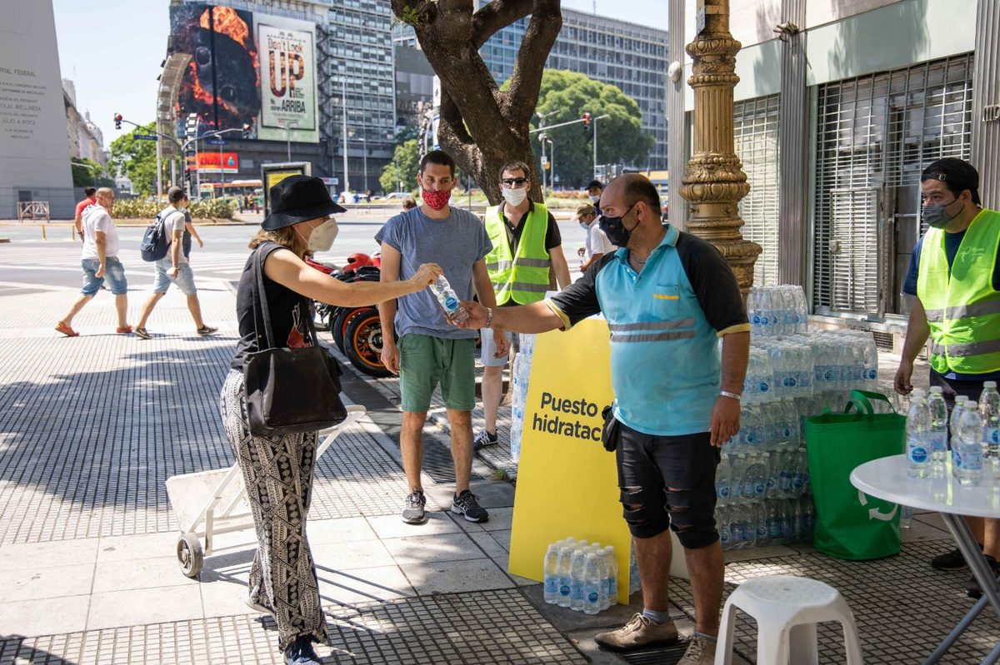

Calor
Ante el calor, Salud recomienda hidratarse seguido y evitar el sol entre las 10 y las 16
El Ministerio de Salud de la Nación recomienda hidratarse seguido y evitar el sol entre las 10 y las 16, de acuerdo con su guía para olas de calor.

Ante el calor, el Ministerio de Salud de la Nación recomienda hidratarse seguido y evitar el sol entre las 10 y las 16, de acuerdo con su guía oficial.
La recomendación forma parte de las indicaciones del Ministerio para el verano y las olas de calor, no de un aviso meteorológico de este domingo.
Esta edición no publica temperaturas ni alertas del Servicio Meteorológico Nacional que no hayan sido verificadas en la portada.
La foto es una imagen de archivo de un puesto de hidratación en Buenos Aires, no de una jornada particular de esta semana.
Fuente
Ministerio de Salud de la Nación